Baking Tools
1. Measuring Bowl

A sturdy bowl, usually made of glass, metal, or plastic, used to hold and combine ingredients while mixing batters, doughs, and fillings.
2. Measuring Cups

A set of cups in graduated sizes designed to measure precise amounts of dry or liquid ingredients, ensuring accurate recipe results.
3. Measuring Spoons

Small spoons in specific measurements (like 1 tsp or 1 tbsp) used for accurately measuring small quantities of ingredients such as spices, extracts, and leaveners.
4. Whisk
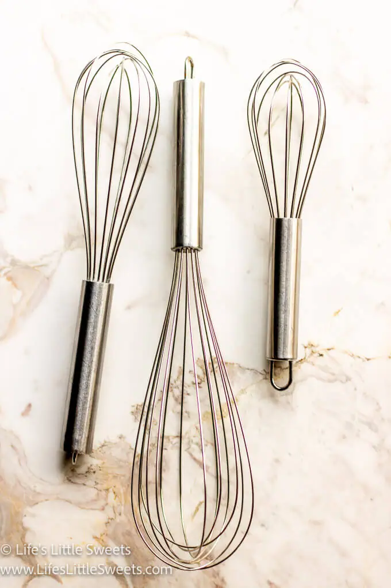
A handheld tool made of looped wires used to blend ingredients smoothly, whip cream, beat eggs, and add air to mixtures for light, fluffy textures.
5. Spatula
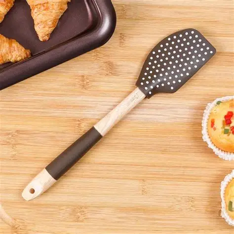
A versatile tool with a flexible silicone or rubber blade used for scraping bowls clean, folding delicate mixtures, and spreading frosting or batter.
6. Rolling Pin
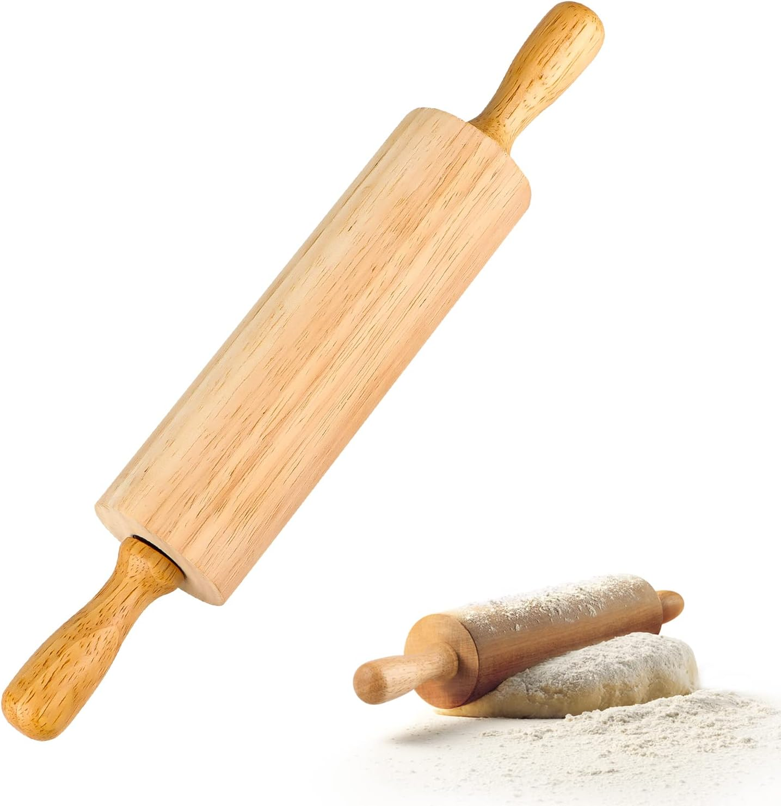
A cylindrical tool, either solid or with handles, used to roll out dough evenly for pastries, cookies, and pie crusts.
7. Pastry Brush
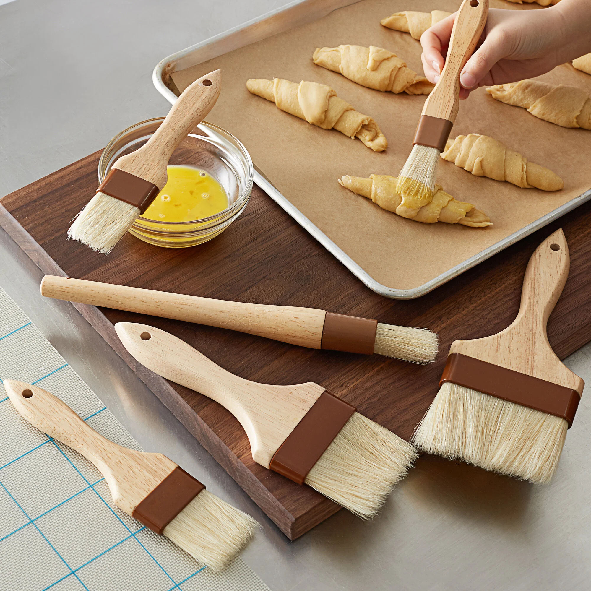
A soft-bristled brush used to apply liquids such as melted butter, egg wash, milk, or glazes to pastries and breads for finishing touches.
8. Cooling Rack
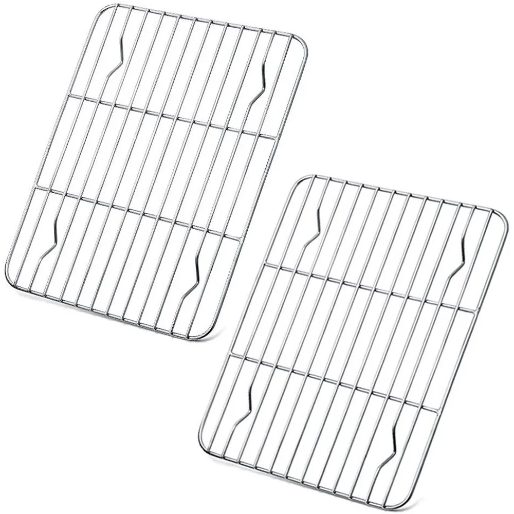
A raised wire grid that allows air to circulate around baked items, helping them cool evenly and preventing sogginess.
9. Baking Sheet

A flat metal pan, often rimmed, used for baking cookies, roasting vegetables, and supporting other bakeware in the oven.
10. Cake Pan
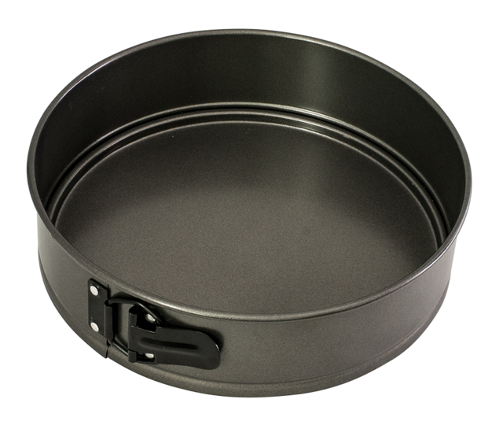
A deep, round or square pan used to bake cake layers, designed to cook batter evenly and release cleanly after baking.
11. Muffin Pan
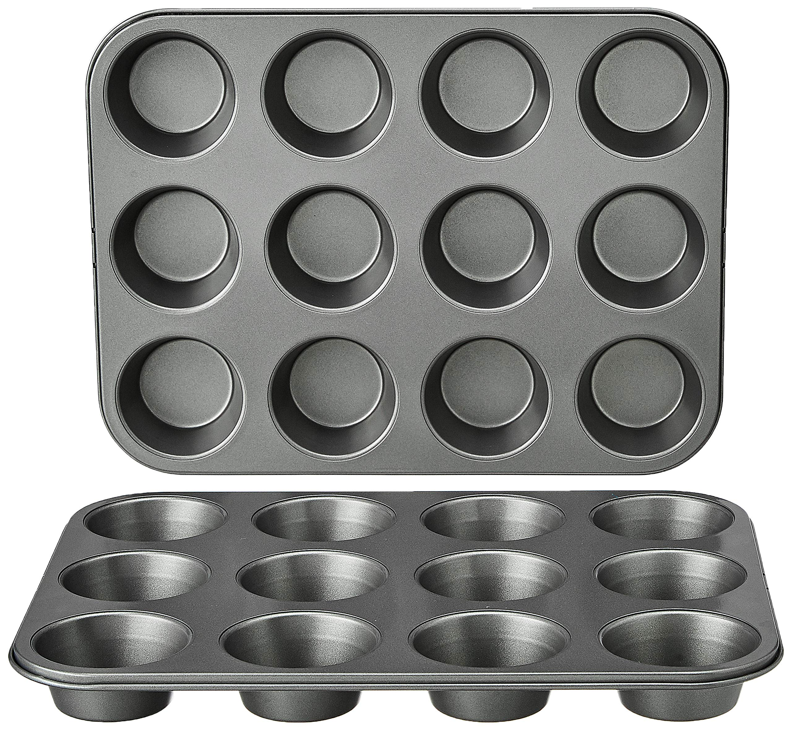
A tray with multiple cup-shaped molds that hold batter for muffins or cupcakes, helping them bake into uniform shapes.
12. Loaf Pan
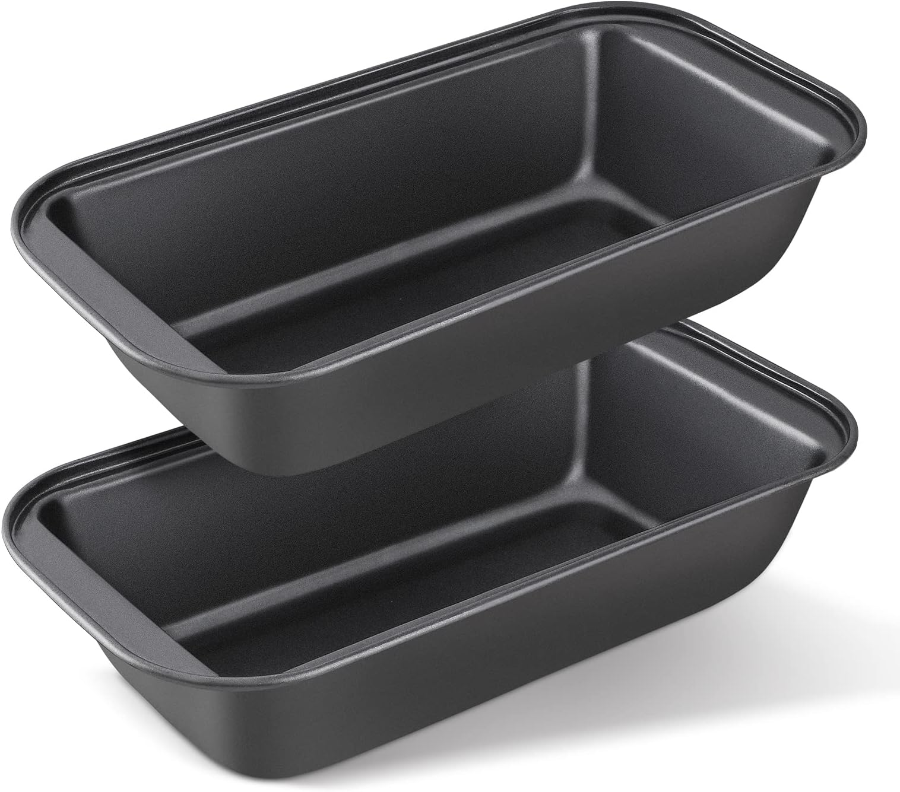
A rectangular deep pan used for baking breads, pound cakes, and meatloaf, giving them a tall, structured shape.
13. Pie Dish
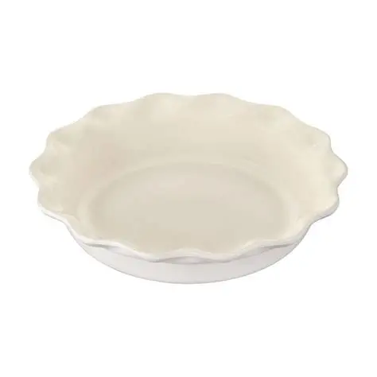
A round, shallow dish with sloped sides, made from glass, ceramic, or metal, designed to bake pies with crisp, even crusts.
14. Tart Pan
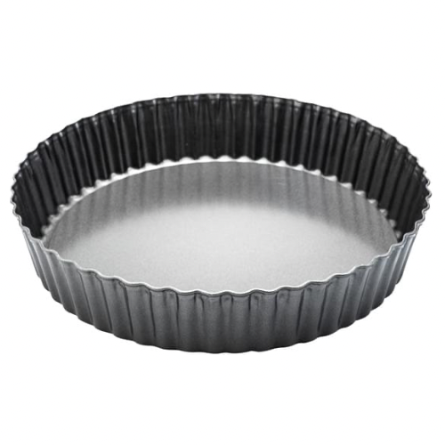
A shallow pan with straight or fluted edges, often featuring a removable bottom to make it easy to release delicate tart shells.
15. Spring Form Pan
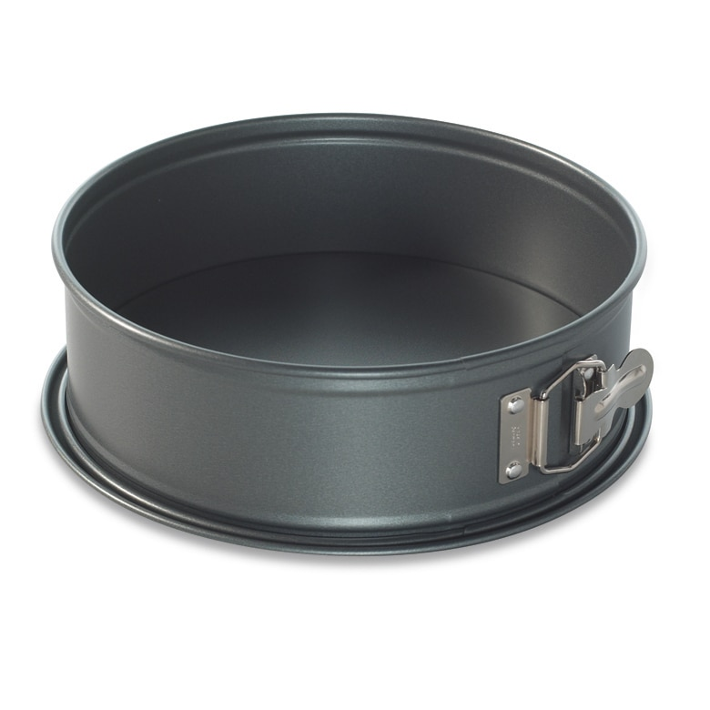
A pan with sides that latch and unlatch from the base, perfect for delicate cakes like cheesecakes that can’t be flipped out of a regular pan.
17. Sifter
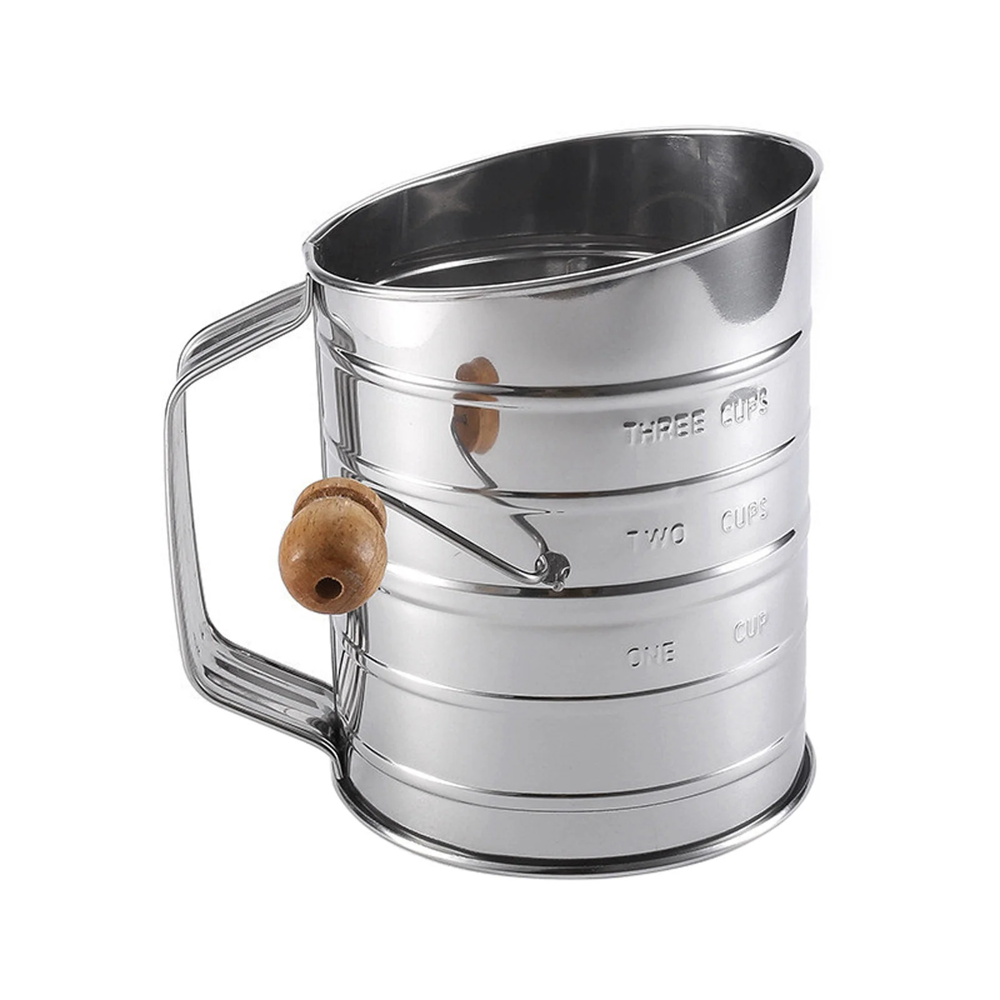
A handheld tool with a mesh screen or crank mechanism used to break up clumps and aerate flour, cocoa, and powdered sugar for lighter, smoother mixtures.
18. Dough Scraper
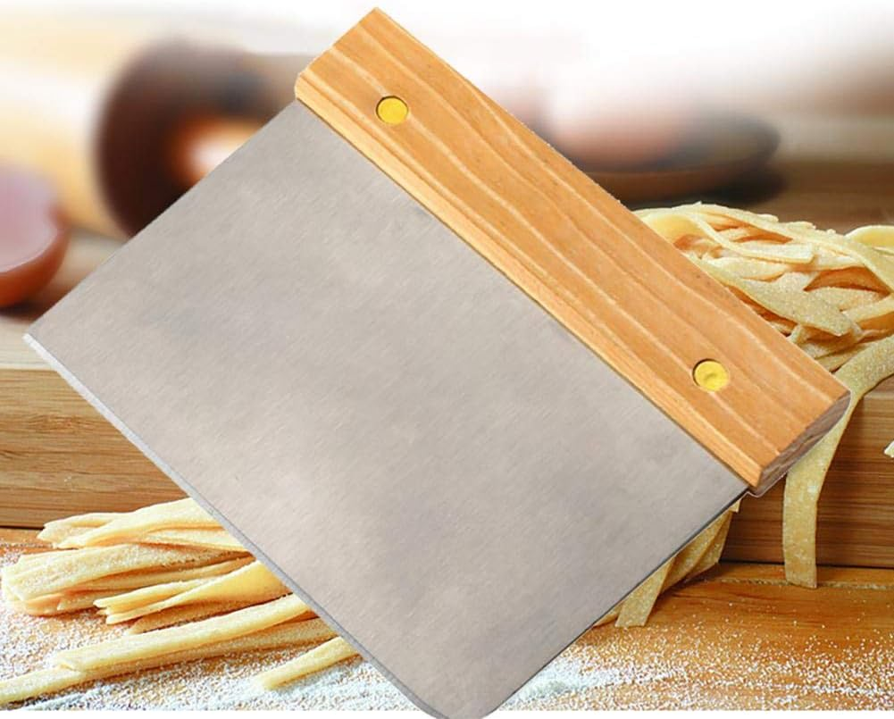
A flexible plastic or metal tool used to gather sticky dough, move portions around, and clean dough off bowls or counters.
19. Pastry Blender
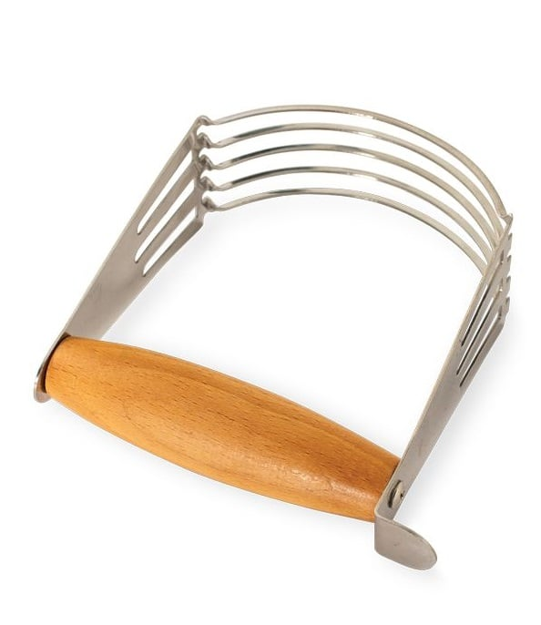
A tool with curved metal blades or wires attached to a handle, used to cut cold butter into flour to create flaky pastry dough.
20. Piping Bag and Nozzels
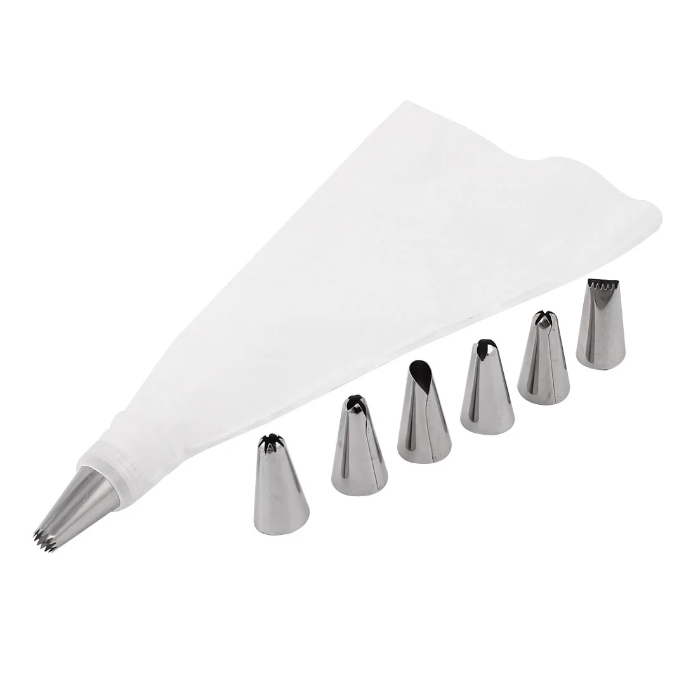
Cone-shaped bags fitted with metal or plastic nozzles used to pipe frosting, dough, or fillings with control. Different tips create decorative shapes like swirls, flowers, borders, and fine details.